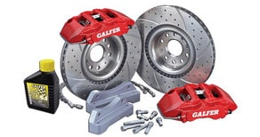
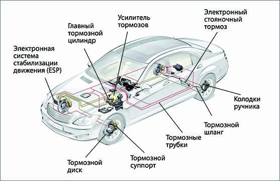

CТО
CТО
Капелла
ВНИМАНИЕ! Мы переехали!!!
Наш новый адрес:
ЧЕСТНОЕ СТО по ремонту суппортов в Минске с рассрочкой.
Ремонт тормозных суппортов, замена тормозных цилиндров, направляющих, замена тормозных трубок, замена тормозных дисков и колодок, ремонт ручника, разработка тормозов и многое другое на нашей СТО в Минске.
Официальная гарантия на все работы.
ВЫ ПЛАТИТЕ ТОЛЬКО ЗА РЕЗУЛЬТАТ!
Звоните ежедневно
с 9 до 20 часов!
 +375 (33) 600 23 47
+375 (33) 600 23 47
 +375 (29) 627 49 07
+375 (29) 627 49 07
или напишите свой вопрос на Viber
 +375 29 627 49 07
+375 29 627 49 07
 РАССРОЧКА на 6 месяцев!!!
РАССРОЧКА на 6 месяцев!!!
Ремонт авто сегодня, оплата потом!
Оцените нас:
 Мы проводим ремонт и замену тормозных суппортов любого типа. Цены на ремонт суппортов у нас на СТО варьируются в пределах от 40 до 55 руб. за ремонт одного тормозного суппорта. Продолжительность ремонта одного тормозного суппорта обычно составляет не более часа-двух, в зависимости от закорелости механизма. При этом производится замена ремкомплекта с или без замены поршней; проверка, очистка каналов и замена смазки направляющих пальцев суппорта.
В общем ремонт суппорта потребует от Вас следующих затрат:
- за работу по ремонту суппорта. Цена услуги "Ремонт переднего тормозного суппорта" - 40 руб.; "Ремонт заднего тормозного суппорта" - 55 руб..
- за ремкомлект суппорта. Цена одного ремкомплекта на один суппорт, включающего в себя пыльники, сальники, кольца, смазку и поршни, составит 30-80 руб., без поршней - 15-25 руб., в зависимости от производителя ремкомплекта и конструкции суппорта. Ремкомплект суппорта для ремонта мы можем приобрести самостоятельно.
- за направляющие пальцы (если потребуется). Стоимость направляющих пальцев, при необходимости их замены, может составлять примерно 8-30 руб. за ремкомплект, включающий в себя сами направляющие, смазку и, предусмотренные конструкцией, резинки (пыльники, манжеты и т.д.).
При осуществлении ремонта суппорта производится полная замена пыльников, сальников, поршней и направляющих суппорта в зависимости от их состояния.
Ремонт суппорта у нас на СТО в Минске включает в себя следующие работы:
- демонтаж суппорта (снятие колеса, снятие суппорта). Может потребоваться замена крепежных болтов суппорта, так как чаще всего они сильно закоревшие и после демонтажа суппорта они приходят в негодность ввиду того, что ремонт суппорта проводится довольно редко и ресурс его работы обычно составляет 5-6 лет;
- диагностика неисправности суппорта;
- полная разборка суппорта;
- чистка от грязи и коррозии рабочих поверхностей цилиндров и каналов направляющих, обработка трущихся поверхностей и полостей специальной смазкой для суппортов;
- замена поршней (по необходимости), пыльников (манжет) цилиндров, пыльников направляющих пальцев и сальников суппорта;
- замена самих направляющих пальцев суппорта (по необходимости, докупаются отдельно от основного ремкомплекта);
- монтаж суппорта на место, прокачка и доливка тормозной жидкости.
 Начнем с устройства тормозной системы автомобиля и принципа работы тормозного суппорта.
На рисунке слева показаны основные узлы современной тормозной системы автомобиля.
Эффективность торможения автомобиля обеспечивается совокупностью множества различных компонентов и механизмов системы, включающей в себя такие как ESP (электронная система стабилизации движения), ABS (антиблокировочная система торможения), система усиления торможения и совокупность механизмов и узлов непосредственно осуществляющих торможение и остановку транспортного средства. Нет необходимости много говорить о важности исправной работы этих узлов и механизмов для безопасности движения на автомобиле. Одним из таких немаловажных узлов и является тормозной суппорт колеса, отвечающий за конечное преобразование усилий от нажатия педали тормоза в замедление вращения и полную остановку вращающегося колеса автомобиля. Как же это происходит?
Тормозной суппорт представляет собой деталь в виде скобы, как бы обнимающую тормозной диск колеса с обеих сторон. При нажатии водителем педали тормоза создается давление тормозной жидкости в системе. Это давление передается на поршни в тормозном суппорте. Как правило, таких поршней в суппорте один или два. В современных автомобилях количество этих поршней может достигать четырех, а в спортивных моделях доходить до восьми.
Тормозной механизм плавающего типа: 1 – цилиндр; 2 – клапан выпуска воздуха; 3 – кольцо уплотнительное; 4 – колодки тормозные; 5 – суппорт; 6 – палец направляющий; 7 – направляющая колодок; 8 – тормозной диск; 9 – щит тормоза; 10 – поршень
Эти поршни создают огромное давление на тормозные колодки, прижимая их к тормозному диску, тем самым замедляя вращение диска колеса вплоть до полной его остановки за счет трения фрикционного материала колодок о поверхность тормозного диска. Устройство тормозного суппорта достаточно простое и представлено на двух рисунках ниже. На большинстве серийных авто устанавливаются суппорта плавающего типа. Это тип тормозных суппортов с плавающей (подвижной) одной стороной скобы, перемещающейся по направляющим пальцам (см. рис). В отличие от фиксированного типа суппортов в плавающем давящий поршень расположен только с одной стороны тормозного диска.
Суппорт: 1 – цилиндр; 2 – кольцо уплотнительное; 3 – поршень; 4 – пыльник; 5 – кольцо стопорное; 6 – колодка тормозная; 7 – направляющая колодок; 8 – суппорт; 9 – чехол защитный; 10 – палец направляющий; 11 – шайба стопорная; 12 – болт крепления направляющего пальца; 13 – болт крепления цилиндра к суппорту; 14 – шайба; 15 – колпачок клапана; 16 – клапан выпуска воздуха
С другой стороны тормозного диска расположен упор скобы с установленной второй тормозной колодкой. В момент торможения поршень давит сначала на одну колодку, находящуюся перед ним прижимая её к диску. Когда колодка прижмется к тормозному диску, плавающий суппорт начинает перемещаться по направляющим в сторону от диска, прижимая тем самым вторую, противоположную, тормозную колодку к диску. У фиксированного типа тормозных суппортов поршни расположены с обеих сторон тормозного диска и поэтому давление на обе колодки происходит одновременно. Данный тип тормозного суппорта дороже и поэтому в основном устанавливается в более дорогих моделях с большим диаметром колес. С фиксированным типом тормозных суппортов меньше хлопот, так как нет главной проблемы плавающего типа тормозных суппортов - постоянно закисающих и требующих периодической смазки или замены направляющих пальцев вместе с пыльниками (см. рис ниже). Постоянно летящая из-под колес грязь и вода, попадая на тормозной суппорт, проникает сквозь изношенные пыльники направляющих пальцев, забивая направляющий канал. Как результат, плавающий суппорт перестает свободно перемещаться относительно тормозного диска и колодки остаются в фиксированном положении, переставая выполнять свою главную функцию - остановка вращения диска колеса.
- утечка тормозной жидкости по причине нарушения герметичности соединения тормозных трубок с суппортом;
- разбухание или повреждение уплотнительных манжет тормозных цилиндров, в которых двигается поршень, что также может являться одной из причин утечки тормозной жидкости;
- попадание воздуха в цилиндры и тормозные трубки подходящие к ним;
- закисание поршней в цилиндрах с потерей их подвижности и силы, прижимающей тормозные колодки;
- закисание направляющих пальцев (см. рисунок) в следствие разрыва пыльников (для суппортов плавающего типа) и, как результат потеря их подвижности, перекос и заклинивание тормозов
Помимо ремонта суппортов мы осуществляем замену дисковых и барабанных тормозных колодок, замену тормозной жидкости, замену тормозных трубок, тормозных дисков, ремонт ручного (стояночного) тормоза, замену тросов ручника, разработку (прокачку) тормозов.
Цена услуги "Замена дисковых тормозных колодок" у нас на СТО в Минске составляет 40 руб. (за обе стороны одной оси);
Цена услуги "Замена барабанных тормозных колодок" - 70 руб. (за обе стороны);
Цена услуги "Замена тормозных дисков" - 40 руб.за пару;
Цена услуги "Замена тормозных дисков с колодками" - 40 руб. за пару;
Цена услуги "Замена тормозных трубок" зависит от длины заменяемого участка и может доходить до 120 руб. (при замене всей магистрали), стоимость самих трубок рассчитывается исходя из цены 5 руб за метр трубки.;
Цена работы по замене тросов ручника - 40-80 руб.
На все работы, выполняемые у нас на СТО в Минске, для держателей карт рассрочки "Карта покупок", "КартаFUN", "SMART Карта" или "МАГНИТ" действует РАССРОЧКА на 6 месяцев. Цены на услуги при оплате в рассрочку не меняются. Мы предоставляем ЧЕСТНУЮ рассрочку на оплату наших услуг без скрытых комиссий и двойных цен. Если у Вас нет карты рассрочки, то оформить их можно через интернет в кратчайшие сроки без особых проблем. Ссылки на страницы банков для оформления карт рассрочки Вы найдете на главной странице нашего сайта здесь.
Мы используем только качественные материалы и запчасти для смазки и замены вышедших из строя частей.
Все необходимые запасные части для ремонта тормозного суппорта и всей тормозной системы мы можем приобрести самостоятельно. Опытный мастер даст совет по выбору качественных запасных частей для ремонта суппорта. Подскажет к качеству каких запчастей стоит подойти более тщательно.
На все, производимые на нашей СТО в Минске, работы по ремонту суппорта Вы получите от нас ОФИЦИАЛЬНУЮ ГАРАНТИЮ. Но даже по ее истечении мы не бросаем своих клиентов и, если гарантийный случай наступил не в результате естественного износа, а по нашей вине, то мы исправим и заменим вышедшие из строя части за свой счет.
В дополнение к любому ремонту авто мы выполним бесплатную диагностику всей подвески и ходовой части Вашего автомобиля. Проведем компьютерную диагностику двигателя на наличие ошибок.
Узнать стоимость ремонта суппорта или других услуг по ремонту именно Вашей марки автомобиля Вы можете задав свой вопрос мастеру на  +375 (29) 627-49-07 или оставив свой номер телефона в поле снизу, и, как только мастер освободится, он перезвонит Вам, ответит на все Ваши вопросы и запишет на диагностику или ремонт Вашего автомобиля на удобное для Вас время.
+375 (29) 627-49-07 или оставив свой номер телефона в поле снизу, и, как только мастер освободится, он перезвонит Вам, ответит на все Ваши вопросы и запишет на диагностику или ремонт Вашего автомобиля на удобное для Вас время.
Отправка запроса Вас ни к чему не обязывает. Спрашивайте, мы рады будем Вам ответить!
Заполните поля (модель автомобиля или VIN-номер, способ получения ответа, элементы требующие замены или ремонта) и отправьте запрос.
Ответ с ценой интересующего Вас ремонта и условиями Вы получите через 30-60 минут указанным Вами способом.
Если произошла задержка с получением ответа, то не судите строго, клиентов много и от их количества зависит насколько быстро мастер обработает Ваш запрос. В любом случае мы Вам ответим. Мы отвечаем на все присланые запросы.
Мы гарантируем, что введенная Вами информация не попадет в руки третьих лиц. Мы не используем Ваши контакты для рассылок и гарантируем конфиденциальность введенной Вами информации.
Остались вопросы по ремонту автомобиля или работе СТО?
Задайте их по телефонам  +375 (33) 600 23 47 или
+375 (33) 600 23 47 или  +375 (29) 627 49 07 или отправьте свой вопрос мастеру на
+375 (29) 627 49 07 или отправьте свой вопрос мастеру на +375 29 627 49 07
+375 29 627 49 07
* сроки гарантии на выполненные работы регулируются п.107 Главы 15 "Правил бытового обслуживания потребителей"
минск.мой-автосервис.бел © 2016-2020 ООО "КапеллаПлюс" УНП 191187089